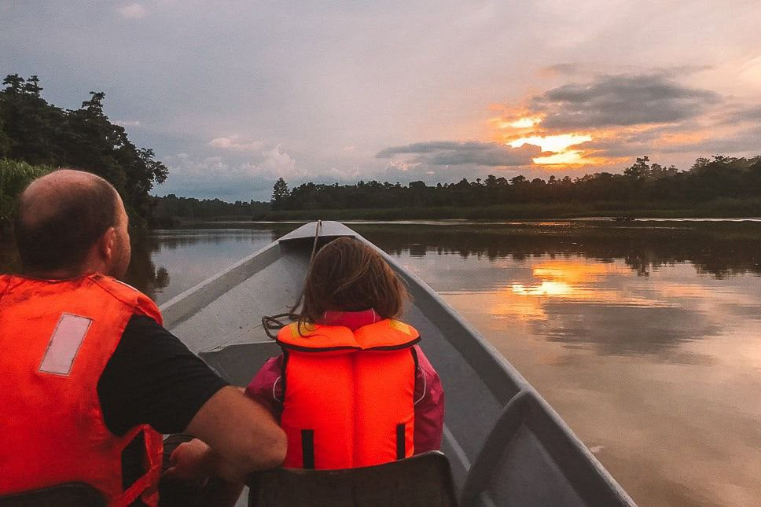
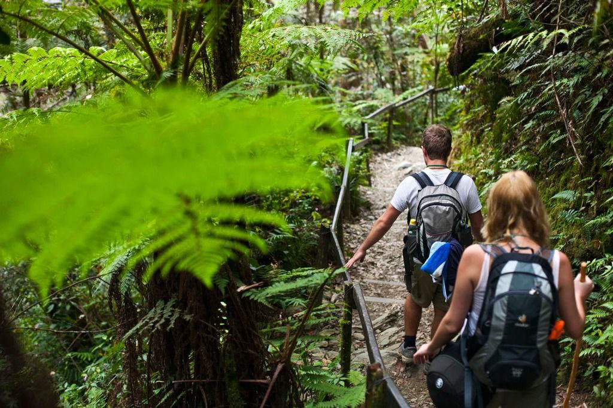
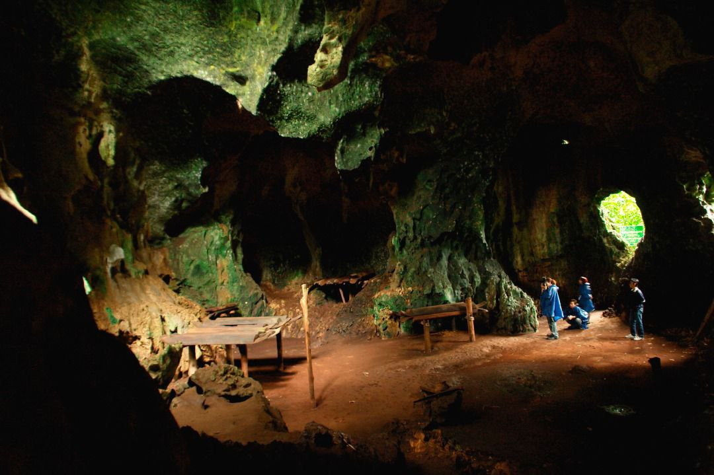

Image |
Activity |
Description |

|
Morning Sunrise River Cruise |
Be ready for an early awakening, as your morning cruise leaves at 6 am sharp! Despite the very early hour, these sunrise river cruises were our favourite.
The early morning is a perfect time to see crocs, as they try to catch one of the hundred birds or small monkeys sitting around the river.
We saw some huge adult saltwater crocodiles and a few babies lying on the mud of the river banks.
Once the sun starts to rise and you get deeper into the jungle, you’ll see more and more monkeys wake up and giving you an amazing show! We spotted macaques, proboscis monkeys (who are endangered but are commonly seen) and even some leaf monkeys. |
|
Visiting Caves |
Located about 41km from Kota Kinabatangan township, there are four main caves, agop suriba (lower) on the forest floor, agop lintaga (middle), agop sawat (upper) betweeen 12-15m high, and agop dimunduk. |

|
Jungle Trekking |
After having breakfast and resting out a bit, it’s time to discover the surrounding jungle. It’s amazing how the local guides spot the wildlife! They’re definitely experts!
Nevertheless, a walk through the rainforest is never boring! Our local guide, who lived here all his life, told us many interesting stories about surviving in the jungle and special trees, plants or insects.
Which leaves to use as a medicine, which branch to transform into a weapon
|
|
Afternoon Sunset River Cruise |
The afternoon cruises are great for spotting monkeys. Once the heat of the day is over, they love to rest, play and just sit around the Kinabatangan River banks.
We got very lucky and spotted orangutans immediately on our first sunset cruise and again the day after that.
An entire family (mom, dad and baby) were hanging out high in the treetops. Many birds hang around the river as well. |

|
Night Walk |
Make sure you don’t miss a night walk in the jungle of Borneo!
Many species come out at night, some scarier than others.
But no worries, your very knowledgeable guide will not only spot them for you but also reassure you there is nothing to be afraid of.
For our girls this was a very thrilling experience, walking with their flashlight through the jungle looking for wildlife.
At night, the sounds of the jungle are everywhere. This is how exciting as it gets!
We saw many insects, frogs, a palm civet cat, heard the monkeys and spotted lots of birds sleeping on branches. |